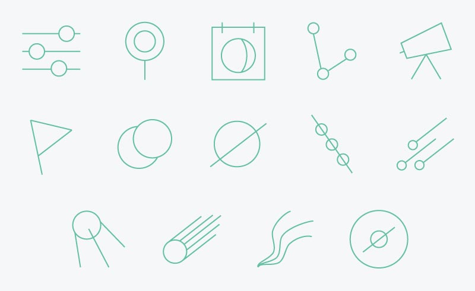

< Prev
Next >
A work in progress, the Astrolabe app is any novice—-or expert—-astronomer’s go-to mobile tool. Including a sky map, location finder, event guide, and more, it is a convenient way to stay in tune with the night sky.
Made with love and powered with ice cream.